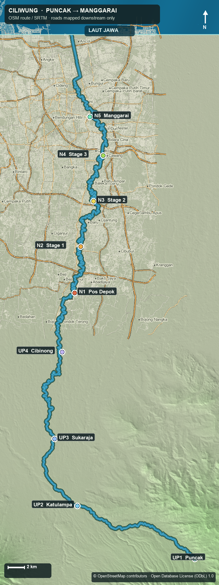

C
Ciliwung · Flood Explorer
Sembilan lokasi · Puncak → Manggarai · hujan demo
Curah hujan per wilayahmm/jam
Waktu simulasi00:00
Model konseptual N1–N5. UP1–UP4 adalah lokasi geografis dengan air dasar visual, bukan node hujan pada model mandiri. Parameter memakai asumsi demo tetap, belum dikalibrasi. Muka air channel dibatasi crest; spill melebar dengan heuristik visual, bukan hidraulika. Pantai Laut Jawa disederhanakan. Visual ini bukan prediksi banjir atau hasil HEC‑RAS.
Peta area

© OpenStreetMap contributors · ODbL · Relief SRTM
STASIUN TERPILIH
Pos Depok
Elevasi tanah—
Kenaikan muka air model0.00 m
TMA saat ini · backend—
Waktu simulasi00:00:00
PREDIKSI · SYNTHETIC DEMO
Pos Depok · TMA absolut (cm), bukan kenaikan mesh.
+30 menit——
+60 menit——
Seret untuk orbit · scroll untuk zoom · klik kanan untuk geser